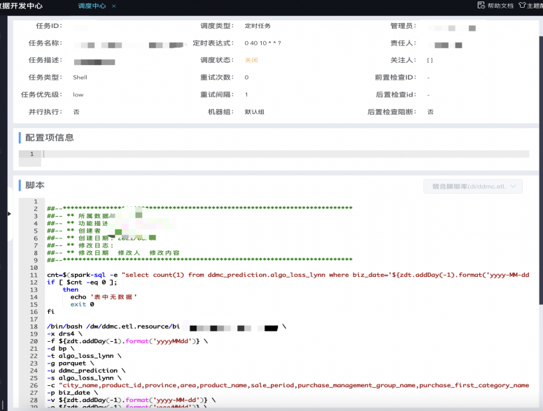

叮咚买菜基于Doris引擎的应用实践
转自公众号：SelectDB
http://mp.weixin.qq.com/s?__biz=Mzg3Njc2NDAwOA==&mid=2247518311&idx=1&sn=d18e9d2be16c26833d4d3e03f5c2836b

业务需求
随着叮咚买菜业务的发展，不同的业务场景对数据分析提出了不同的需求，这些需求最终被数据看板、实时 Ad-Hoc、行为分析、B/C 端业务平台和标签平台等系统应用所承载，为实现这些系统应用，叮咚大数据希望引入一款实时 OLAP 数据库，旨在提供一个灵活的多维实时查询和分析的平台，统一数据的接入和查询方案，解决各业务线对数据高效实时查询和精细化运营的需求。基于上述诉求，我们希望所引入的数据库具备以下能力：
可以实时高效地分析和使用数据；
可以支持明细数据、汇总数据两种不同的数据查询方式；
可以对入库后的数据即席选择维度和条件查询，实时/近实时返回结果
选型与对比
支持标准 SQL，无需投入额外的时间适应和学习新的 SQL 方言、直接用标准 SQL 即可直接查询，最大化降低使用门槛；
支持 Join 操作，方便事实表与维度表进行关联查询，在应对维度更新时具有更高的灵活性、无需对处理后的宽表进行重刷；
支持高并发查询，系统面临多条业务线的同时使用，因此需要有比较强的并行查询能力，以更好满足业务需求；
支持离线和实时导入，可与已有技术栈轻松对接，支持多个数据源或大数据组件的离线和实时导入，以更好适配不同使用场景；
支持大数据量的明细数据查询，以满足不同业务用户灵活多变的分析需求；
架构体系
离线部分：数据从业务库通过 DataX 导入到数据仓库 ODS 层，经过层层处理输出到 Doris 中，上层 BI 系统链接到 Doris 进行报表展示。
实时部分：数据通过 Flink 消费 Kafka 中的数据，进行相应的逻辑处理后，输出到 Doris 或者 HDFS 中，供应用层使用。
在数据应用的 OLAP 层中，Doris 应用方案如下图所示：
模型创建规范化：采用流程审批的方式进行数据建模，根据具体的业务场景来搭建 Duplicate，Unique Key 和 Aggregate 模型，并按照用户提供的数据量设置合适的 Bucket 数目，做好模型归属关系。
数据入口的统一：数据的流入主要有实时和离线两种，实时数据用 Flink 任务从 Kafka 消费数据，逻辑处理流入 Doris ；离线数据通过 Broker Load 方式从 Hive 中将数据灌入 Doris 中。
服务对外出口的统一：对外服务主要通过两种方式暴露接口，一种是使用 JDBC 直连，上层系统配置 Doris 集群的 FE 的连接信息直连 Doris；另一种是业务通过内部的 One API 服务配置业务接口使用 Doris。
业务 SQL 的优化治理： 通过采集 Doris FE 的审计日志，以此来对 SQL 的性能进行分析优化，以及对 Doris 服务进行治理。
应用实践
接下来分享 Apache Doris 在叮咚买菜常见业务场景中的应用实践及使用经验。
实时数据分析
从下方数仓模型图可知，数据通过 Flink 作业进行逻辑处理，在不同层级 Kafka 中进行流转加工，经过数据汇总层之后，应用层需要一个组件来存储结果数据，该组件一般是从 MySQL 数据库、KV 存储和 OLAP 引擎三者中选择其一。
考虑到我们的结果数据大多以计算指标数据居多，缺乏维度数据，因此应用层的组件需要具备高效、低延迟的数据 Join 能力。基于以上因素，我们最终选择 Apache Doris 作为实时数仓和实时业务的数据应用层，Doris 可以有效降低数据处理延时，提高查询效率。
比如在销量计划项目中，该项目需要每日实时写入大量预测数据，并且这些数据需要较低时延提供给分析师进行及时对比分析、修改该预测值，并提供到供应链端。因修改预测值会影响到系统调拨，所以选用的存储必须是要具有高吞吐低延迟特性，Doris 完全符合该要求。从销量计划的整个数据生产及处理链路来看，使用 Doris 后，最慢 2 秒内可以看到最新的数据。
当前公司已经有数十个实时业务需求接入到 Doris 中，随着业务的不断发展，这个数字也在慢慢增加。
B 端业务查询取数
在实际的使用中，通常会有 B 端业务或系统需要从数据仓库中取数的需求，比如自研 Pylon 系统（主要用来基于用户偏好的数据查询）会根据 UID 查询用户画像信息。在这种场景下，通常需要进行复杂的模型关联，同时要求在秒级或者毫秒级返回查询结果。
使用前：我们最初使用 Spark 的 JDBC 方式来直接查询数据仓库 Hive 表数据，由于存放用户标签数据的 Hive 表的数据量有几千万体量，通过 Spark JDBC 方式要耗费几分钟才能查出结果，同时还存在 Yarn 调度耗时较高的问题，有时会因为队列资源紧张产生延迟，导致一个普通的查询甚至需要十几分钟才能跑出结果，用户的体验度非常不好。
使用后：经过我们对数据链路的改造，将 Hive 的用户标签数据离线灌入 Doris 中，再用同样的 SQL 查询，Doris 的性能在绝大多数场景下比 Spark 要好很多，可以在秒级别得到返回结果。
标签系统
最初我们的标签数据存放在 ES 中，但是随着业务的扩展、下游业务越来越多，标签数据规模急速膨胀，策略规则不断增加变化，标签系统遭遇严重的性能瓶颈。
聚合和 Join 查询的性能低
人群圈选花费时间近 20 分钟
ES 导入慢、查询性能低
为解决以上问题，我们目前正在尝试使用 Doris 来替换 ES，希望通过 Doris 解决上述问题，选择 Doris 主要考虑以下三点：
1、分布式 Join 大大提升查询效率
原有商品 ID 和仓库 ID 通过嵌套类型存储在 ES 中，替换为 Doris 存储之后，需要将复杂的嵌套类型拆解为两张表来做表级关联，同时可以试用 Doris 的多种分布式的 Join 提高查询得性能。Doris 的分布式 Join 主要有 Shuffle Join、Broadcast Join 和 Colocate Join。
其中 Colocate Join 查询性能是最好的，旨在为某些 Join 查询提供本地性优化，来减少数据在节点间的传输耗时、加速查询，另外我们在该场景下基本均为千万级的表。综合来看，Colocate Join 比较符合场景与需求，最终决定使用 Colocate Join方式提升 Join 性能。
如何使用：标签数据的使用主要涉及到两张大表的 Join，建表时需要设置相同的 Distributed Key、相同的 Bucket数、相同的副本数，还要将两个表通过colocate_with属性划分到一个组 Colocation Group(CG)。
CREATE TABLE `profile_table` (
`pdate` date NULL COMMENT "null",
`product_mongo_id` varchar(4000) NULL COMMENT "商品ID",
`station_id` varchar(4000) NULL COMMENT "仓id",
......
) ENGINE=OLAP
UNIQUE KEY(`pdate`,
`product_mongo_id`, `station_id`)
COMMENT "OLAP"
PARTITION BY RANGE(`pdate`)()
DISTRIBUTED BY
HASH(`product_mongo_id`) BUCKETS 7
PROPERTIES ("colocate_with" = "profile_table","in_memory" = "false","storage_format" = "V2")
CREATE TABLE
`station_info_table` ( `product_mongo_id` varchar(4000) NULL COMMENT "商品id", `station_id` varchar(4000)NULL
COMMENT "站点id",
`snapshot` date NULL COMMENT "日期",
`product_id` bigint(20) NULL COMMENT "商品id", ......)
ENGINE=OLAPUNIQUE KEY(`product_mongo_id`, `station_id`, `snapshot`)
COMMENT "OLAP"
PARTITION BY RANGE(`snapshot`)()
DISTRIBUTED BY
HASH(`product_mongo_id`) BUCKETS 7
PROPERTIES ("colocate_with" = "profile_table","in_memory" = "false","storage_format" = "V2")
比如我们有这样一条查询语句：
select count(psp.product_mongo_id) from profile_table psp
left join station_info_table psi on psp.product_mongo_id=psi.product_mongo_id and psp.station_id=psi.station_id
where psp.pdate='2023-03-16' and psp.four_category='特色醋' and psp.brand_name='宝鼎天鱼' and psp.weight_unit='ml' and psp.pmg_name='粮油调味组';
A. 数据导入时保证数据本地性
Doris 的分区方式如下所示，先根据分区字段 Range 分区，再根据指定的 Distributed Key Hash 分桶。

所以我们在数据导入时保证本地性的核心思想就是两次映射，对于 Colocate Tables，我们保证相同 Distributed Key 的数据映射到相同的 Bucket Seq，再保证相同 Bucket Seq 的 Buckets 映射到相同的 BE。可以同查看执行计划查看是否使用了Colocate Join：
对于 HashJoinFragment，由于 Join 的多张表有了数据本地性保证，所以可以去掉 Exchange Node，避免网络传输，将 ScanNode 直接设置为 Hash Join Node 的 Child。
B. 查询调度时保证数据本地性
查询调度的目标：一个 Colocate Join 中所有 ScanNode 中所有 Bucket Seq 相同的 Buckets 被调度到同一个 BE。
查询调度的策略：第一个 ScanNode 的 Buckets 随机选择 BE，其余的 ScanNode 和第一个 ScanNode 保持一致。
C. 数据 Balance 后保证数据本地性
新增一个 Daemon 线程专门处理 Colocate Table 的 Balance，并让正常的 Balance 线程不处理 Colocate Table 的 Balance。正常 Balance 的粒度是 Bucket，但是对于 Colocate Table，必须保证同一个 Colocate Group 下所有 Bucket 的数据本地性，所以 Balance 的单位是 Colocate Group。
2、 高效简易的array_contains函数
在做人群圈选时，有以下类似的 Json 结构[{"K1":"V1","K2":200},{"k1":"v2","k2":300}]，当配置k1=v1,k2=200，只要该 Value 里的 Json 项有一项满足全部条件就会被圈出来，我们可以借助 Doris 1.2 版本中的 array_contains数组函数处理，将 Json 转化为 Array 数组处理。
3、Broker Load 加速数据导入效率
Doris Broker Load 是一种高效、稳定的数据导入方式，它可以将数据分成多个分片，然后将每个分片分配给不同的 Broker 节点进行处理，我们使用 Broker Load 将标签数据从 Hive 导入 Doris 中，有效提高了数据导入的效率和稳定性。
BI 看板
我们商业智能分析使用的 BI 分析平台主要是帆软和自研的阿尔法 BI，底层使用 Doris 来存储数据，目前用来做报表的 Doris 表数量已达到了 3000 多张，四个 Doris 集群的日 UV 1000+，PV 达到十几万，由于 Doris 可以达到毫秒级响应速度、支持高并发查询，因此单集群的 QPS 可以达到达到 120 次/秒，符合我们的要求。
OLAP 多维分析
随着业务的增长，我们在运营的过程中我们常常有一些疑问：最近三个月哪个品类的下单量最高？变化趋势如何？各个时段人均下单是多少？某个区域，发生购买行为的年龄段分布是怎样的？......而想要获得结果，必须根据用户行为日志进行事件分析。
目前我们的用户行为数据日均增量为 20亿+，高峰期 100亿+，为了更好的进行事件分析，我们需要保留半年的数据，也就是几千亿的数据量。我们使用 Doris 来存储如此庞大的数据量，在应对复杂的分析场景时可以达到分钟级的响应。在多维分析的过程中， 往往也伴随着大数据量的复杂查询，接下来分享如何使用 Doris 应对：
1、 Bitmap 去重
业务使用过程中需要分析用户参与情况以及活跃程度，考查进行初始行为后的用户中，有多少人会进行后续行为，这时候一般都是使用留存分析模型实现此类需求。该模型使用中有去重操作，计算周期有某天/某周/某月/最近三个月等，由于每天的埋点数据量都能达到几十亿，高峰期 100 亿，在这个情况下，使用count(distinct)性能太差、甚至查询超时（或超过设置的时间），而如果使用 Bitmap 来可以成倍的缩短查询时间。
select
event_id,
date,
count(distinct uid) as count
from event
where
dt>='2022-06-01' and dt<'2022-06-06' and event_id in (......) group by event_id, str_to_date(dt,'%Y-%m-%d');使用 Bitmap 优化 SQL 后
select
event_id,
date,
bitmap_count(uid) as count
from event
where
dt>='2022-06-01' and dt<'2022-06-06' and event_id in (......) group by event_id, str_to_date(dt,'%Y-%m-%d');
使用中需要注意 Bitmap 函数在 Apache Doris 中仍然需要先把数据汇聚到一个 FE 节点才能执行计算，并不能充分发挥分布式计算的优势，在数据量大到一定的情况下， Bitmap 函数并不能获得比 count(distinct) 更好的性能，上述实例之所以能达到预期结果是由于做了分组计算。
如果处理大数据量的全量去重，在建表时将 Bitmap 列的值按照 Range 划分，不同 Range 的值存储在不同的分桶中，保证了不同分桶的 Bitmap 值是正交的。当查询时，先分别对不同分桶中的正交 Bitmap 进行聚合计算，然后顶层节点直接将聚合计算后的值合并汇总并输出，从而解决顶层单节点计算瓶颈问题。
2、前缀索引和 Bloom Filter 索引
Doris 主要支持两类索引：内建的智能索引（包括前缀索引）和创建的二级索引（包括 Bloom Filter 索引和 Bitmap 倒排索引）。实际使用时我们会用到前缀索引和 Bloom Filter 索引来提高查询效率。
前缀索引
Aggregate、Unique 和 Duplicate 三种数据模型中，底层的数据存储是按照各自建表语句中 AGGREGATE KEY、UNIQUE KEY 和 DUPLICATE KEY 指定的列进行排序存储的。前缀索引即在排序的基础上实现的一种根据给定前缀列、快速查询数据的索引方式，实现方式是将一行数据的前 36 个字节作为这行数据的前缀索引，当遇到 VARCHAR 类型时，前缀索引会直接截断。
比如我们要查询按照日期和event_id分组的去重人数，建表语句如下：
CREATE TABLE ubs_event_log_small_event (
event_id int(11) NULL COMMENT "事件id",
dt datetime NOT NULL COMMENT "事件时间",
uid char(128) NULL COMMENT "用户id",
dict_id int(11) NULL COMMENT "用户id字典值",
os varchar(24) NULL COMMENT "操作系统",
......
dict_id_bitmap bitmap BITMAP_UNION NULL COMMENT "bitmap用户id"
) ENGINE=OLAP
AGGREGATE KEY(event_id, dt, uid, dict_id, os, ......)
COMMENT "用户行为事件表"
PARTITION BY RANGE(dt)
()
DISTRIBUTED BY HASH(dt, event_id, uid) BUCKETS 64
SQL 查询的 Where 条件一般遵循建表的 AGGREGATE 模型的 KEY 的顺序，这样可以命中 Doris 内置的前缀索引。
SELECT
CONCAT(
TO_DATE(dt),
' 00:00:00'
) AS tm,
event_id,
BITMAP_UNION_COUNT(dict_id_bitmap) AS UNIQ_1908_1
FROM
kepler.ubs_event_log_small_event
WHERE event_id = 1908 AND
dt >= '2023-03-26'
AND dt < '2023-04-05'
AND
os IN (1, 2)
GROUP BY
1,
2;
针对大数据量的事件表进行查询时我们会设置bloom_filter_columns，加快查询效率：
alter table datasets set("bloom_filter_columns" = "area_name, is_booking, user_source, source_first_order......");查询语句中 where条件有以上设置的字段就会命中该索引。
SELECT * FROM datasets WHERE area_name="****" AND is_booking=0 3、物化视图
为了获得更粗粒度的聚合数据，Doris 允许在建表语句创建出来的 Base 表的基础上，创建若干 Rollup 表。
例如上表ubs_event_log_small_event，我们可以对dtevent_iddict_id_bitmap建立 Rollup 物化视图，这样 Rollup 只包含三列：dtevent_iddict_id_bitmap
优化经验
Broker Load 导数任务流程化
1. 建模过程：需要用户发起建模流程申请，填写需求内容、具体建模语句、预估数据量大小、数据保留时长、所需相关权限账号等信息，足够完整的信息可以在审批时获得建模过程中的元数据信息以及选择更合适的数据模型。
2. Broker Load 导数任务配置：为了提高用户使用效率、降低使用门槛，我们通过 Mapping 映射和自动化配置方式，自动生成导数任务。
3. 导数任务调度：配置完 Broker Load 导数任务，就可以由用户根据需求配置小时或者天级别的调度，这样整个 Doris 数据导入流程，就可以由用户配置自动完成。
